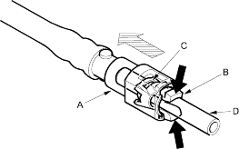
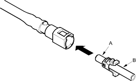
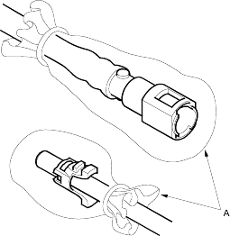

- Relieve fuel pressure (see page 11-430).
- Check the fuel quick-connect fittings for dirt, and clean if necessary.
- Hold the connector (A) with one hand and squeeze the retainer tabs (B) with the other hand to release them from the locking pawls (C). Pull the connector off.
NOTE:
- Be careful not to damage the pipe (D) or other parts. Do not use tools.
- If the connector does not move, keep the retainer tabs pressed down, and alternately pull and push the connector until it comes off easily.
- Do not remove the retainer from the pipe; once removed, the retainer must be replaced with a new one.

- Check the contact area (A) of the pipe (B) for dirt and damage.
- If the surface is dirty, clean it.
- If the surface is rusty or damaged, replace the fuel pump, fuel filter, fuel feed pipe.

- To prevent damage and keep foreign matter out, cover the disconnected connector and pipe end with plastic bags (A).
NOTE:
- The retainer cannot be reused once it has been removed from the pipe.
Replace the retainer when
- replacing the fuel rail.
- replacing the fuel feed pipe.
- replacing the fuel pump.
- replacing the fuel filter.
- replacing the fuel gauge sending unit.
- it has been removed from the pipe.
- it is damaged.
